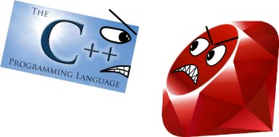

Захари
- Президент на Даркиум - прави браузър
- Програмира професионално от 10 години
- Знае езици за програмиране
- Да, този също го знае
- Е, този вече само Бойко Банчев го знае
- Вторият по количество код в Нимрод, след автора - Андреас Румпф
- Като цяло пич
Боби
- Президент на това да си безработен
- Програмира професионално от 12 години
- Най-вече игри
- Пише open source
- Води курсове
- Иска С++ да умре най-сетне
- Като цяло, също така пич
Предговор
- Какво е метапрограмиране?
- Не това, което се изпълнява когато потребителяt ползва програмата
- Програмиране за програмирането
- Изпълнява се от компилатора
- Супер елементарен пример:
a + b * c
Да, и макросите
Какво е Nimrod?
- NextGen, Супер як, 2.0, buzzword, buzzword, buzzword език за програмиране.
- nimrod-lang.org
Ордьовър
- Текущото състояние на света
- Ако искаме бързодействие - плачем със С++
- Ако можем да си позволим лопати хардуер - сме щастливи с Руби

Сензационна теза
Представете си любимия си език, любимата си библиотека, любимия си код.
Всички преимущества, които виждате в тях, могат успешно да се постигнат Nimrod.
А също така и голяма част от недостатъците им да изчезнат.
Сензационна теза две
Nimrod има потенциала да стане най-използваният език на света вселената.
Nimrod
- Силно типизиран
- Компилиращ се
- Closures
- Итератори
- CTFE
- Type inference
- Garbage collection, но и RAII
- Resumable functions - Concurrency, Async IO
- (нещо като) ООП
HTML Template Engine
Markaby.nim
...което се компилира до...
Expression Pattern Matching
... ту дъ рескю
...да погледнем кода отново...
...след прилагане на първото правило...
...и така натататататък...
...и така нататък казах!
Докато стигнем до този код на С++...
Script Language Binding
RubyBind.nim
Изход:
Bozo: I will slash my enemies with my Holy Sword of Ultimate Imbalance
Bozo: Eat my Holy Sword of Ultimate Imbalance, Kiro
Kiro: Aaaarghhhhh
Прехвърляне на неща в Ruby
- В общият случай тривиална задача
- Предизвикателството са обектите
Експортиране на обекта
Експортирането на сетъри и методи е оставено за упражнение на читателя
Боравене с Ruby обекти
.() функцията майка
a.zyx = b.xxy
Директно свързване с JSON или гаден XML
jsonRequest("http://search.twitter.com/search.json?q=#VarnaConf").tweets[0].author
Command Line Arguments
ping.nim
Unit тестове
WorldCupTest.nim
Още гъзарии
- ORM
- Генериране на сериализация
- Функционално програмиране
- Аспектно програмиране
- "Всички функции са темплейтни", дет вика Захари
- Ефектни ефекти
- И въобще... каквото ви душа иска
Малко неприятности :(
- Има тук-таме бъгчета. Но не в компилирането...
- Няма много пълна стандартна библиотека
- Няма много яко IDE
- Някои хора (Боби) не се кефят на питонски стил на влагане
Бъдеще
"През 2017-та Нимрод ке почне да става за сериозен софтуер"
"През 2019-та 'секи ке пише на Нимрод"